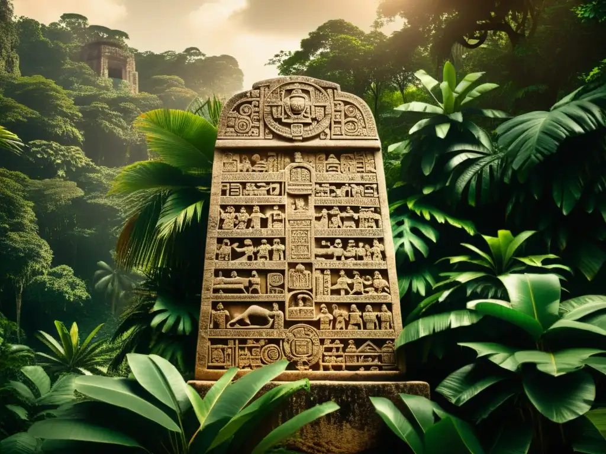

Una cultura con grandes conocimientos y una historia milenaria.
Los mayas fueron una civilización mesoamericana que se desarrolló en territorios que actualmente pertenecen al sureste de México y a países de Centroamérica.
Su historia abarca miles de años. Construyeron ciudades, desarrollaron sistemas de escritura y crearon calendarios relacionados con sus conocimientos astronómicos.

Durante esta etapa surgieron comunidades agrícolas y se desarrollaron las primeras poblaciones importantes.
Muchas ciudades alcanzaron un gran desarrollo político, artístico, científico y arquitectónico.
Algunas ciudades continuaron creciendo y mantuvieron importantes relaciones comerciales y culturales.
Actualmente existen pueblos mayas que conservan sus lenguas, tradiciones y conocimientos. Su cultura sigue formando parte de la identidad de numerosas comunidades.